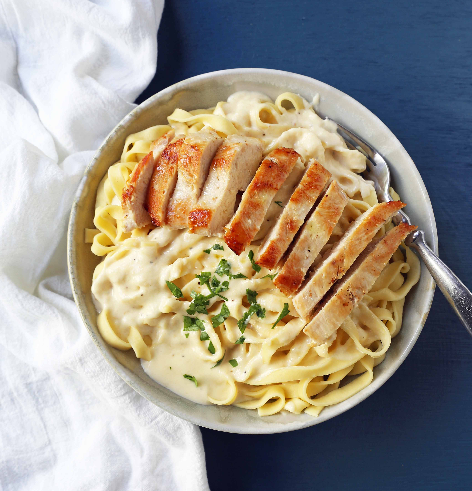

Chicken Fettuccine Alfredo

A restaurant classic that can be made in the comfort of your home.
A family favorite that tastes creamy but light with the inclusion
of chicken, heavy cream, sauteed mushrooms, and parmesean cheese!
Ingredients
- 2 lbs chicken breast
- 3/4 lbs pasta
- 1 lb (thinly sliced white mushrooms)
- 3 cloves garlic, minced
- 3 1/2 cups half and half cream
- 1/4 cup parsley, finely chopped
- 1 tsp sea salt
- 1/4 tsp black pepper
- 3 tbsp olive oil
- 1 tbsp unsalted butter
Steps:
- Cook pasta in a pot of salted water. Drain and set aside.
- Slice the chicken int ostrips and season it all over with salt
and pepper.
- Heat olive oil over medium/high heat and saute chicken for 5
minutes. Remove and keep warm.
- Heat butter and saute onion for 3 minutes or until soft. Add
sliced mushrooms and saute until soft (3-7 min). Add garlic and
saute for 30 seconds. Stir constantly.
- Add half-and-half and simmer over medium/high heat for 8-10
minutes or until it begins to thicken. Add chicken, parsely, and
season the sauce with salt and pepper.
- Stir in the pasta and warm through.